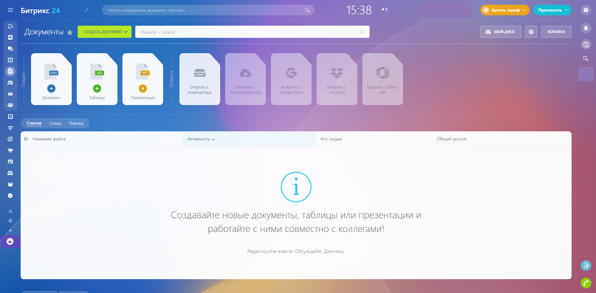
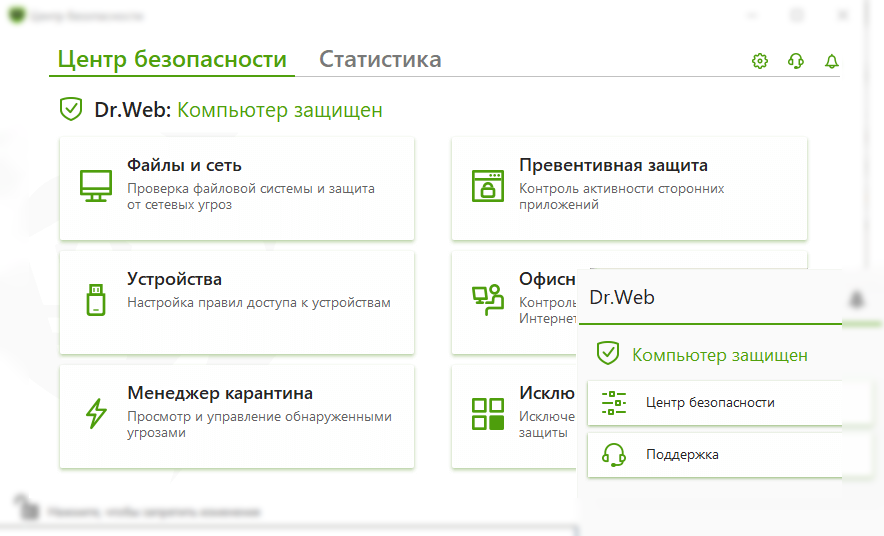
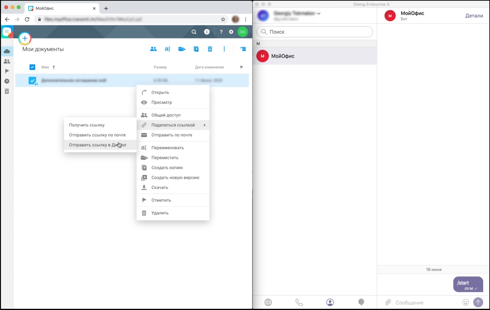

3 русских программы для офиса
Bitrix24
Комплексное решение для бизнеса. Включает в себя облачное хранилище, внутреннюю соцсеть компании, таск-трекер, мессенджер, приложение для видеоконференций, редактор документов, CRM-систему. Может заменить экосистему Atlassian, включающую в себя таск-трекеры Jira и Trello, корпоративный мессенджер Slack, систему хостинга и разработки проектов Bitbucket. Клиенты могут выбрать версию Битрикс24, максимально подходящую к их реальным потребностям, и тем самым не переплачивать за лишний функционал. Есть даже бесплатная версия, возможностей которой вполне достаточно для небольшого офиса.

Dr. Web Security Suite
Представляет собой наборы эффективных решений для сетевой безопасности. Обеспечивает безопасность серверов, в том числе почтовых, интернет-шлюзов, мобильных устройств, рабочих станций, встроенных систем (кассовых аппаратов, банкоматов, мультикиосков). ПО распространяется платно. Корпоративные продукты Dr. Web конкурируют с решениями от TrendMicro, Norton, Intel Security.

Dialog
Корпоративный мессенджер, заменяющий Slack. Поддерживает каналы и групповые чаты, чат-ботов, обмен файлами, аудио— и видеозвонки. Для общения используются защищенные каналы, а вся передаваемая информация шифруется. Мессенджер работает на всех современных операционных системах, включая мобильные.

RussPO.ru